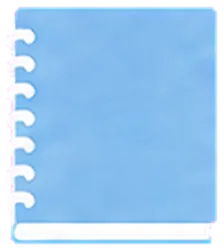

勉強の道 STEP5 論述と面接
論述ボードゲームCC協議会型・JCDA型対応
相談事例をすごろくのように1マスずつ進みながら、論述試験の「読む→整理する→書く」の型を身につけるゲームです。
あそび方
- 型をえらぶCC協議会型か JCDA型
- 事例を読むさくらさんの相談
- マスを順に解く選ぶ→正誤→解説
- 型と見くらべる自分の答えとお手本
まず、型をえらぶ

サニー先生論述は、才能じゃなくて「型」だよ。主訴→見立て→方針の順に、1マスずつ一緒に進もう。
モヤンすごろくなら、ぼくにもできそう…！ふんふん。

はじめに
論述試験は2つの形式があるよ
国家資格キャリアコンサルタント試験の論述(実技)は、受験する登録試験機関によって出題形式が違います。このゲームでは、それぞれのマスに「どちらの形式に近い問いか」のバッジをつけているよ。
※出題形式の最新情報は、必ず各試験機関の公式サイトで確認してね。このゲームの事例と設問はすべて当サイトのオリジナルです。協議会の公式サイト JCDAの公式サイト
事例を読む
まず、事例を読もう
問いは、この事例の中の言葉から出るよ。上から1回、通して読んでね。
相談事例:育休から復職した、さくらさんの相談
相談者:さくらさん(34歳・女性)。メーカー勤務11年目。第2子の育児休業から半年前に復職し、時短勤務中。夫と子ども2人(5歳・1歳)の4人暮らし。
CC1今日は、どんなことをお話しにいらっしゃいましたか。
CL1復職して半年たつんですけど…、なんだか、このままでいいのかなって思うことが増えて。
CC2このままでいいのかな、と思うことが増えているんですね。
CL2はい。時短勤務だから仕方ないんですけど、任される仕事が補助的なものばかりで。産休前は商品企画で、自分の企画が形になるのがうれしかったんです。今は…なんというか、私じゃなくてもいい仕事というか。
CC3産休前は、ご自分の企画が形になることに、やりがいを感じていらしたんですね。
CL3そうなんです。でも、いまは子どもの発熱で急に休むこともあるし、周りに迷惑をかけてるのもわかってて。だから「もっと仕事がしたい」なんて言ったら、わがままかなって。誰にも相談できずにいました。
CC4わがままかもしれない、と感じて、誰にも言えずにいらしたんですね。
CL4はい…。夫は「無理しなくていいよ」って言ってくれるんですけど、それも、なんだかモヤモヤして。私、どうしたいんでしょうね。
CC=キャリアコンサルタント / CL=相談者(クライエント)
読んだら、マス1から解く
マスを順に解く
1マスずつ、問いに答えよう
いまの型：CC協議会型（マスのバッジで、近い問いがわかります）
- 🚩START
- 🏁GOAL
マス 1
共通
相談者の「主訴」をつかむ
さくらさんが一番相談したいこと(主訴)に、いちばん近いのはどれ？
主訴は「相談者自身の言葉」を手がかりにまとめるのが基本。自分の解釈で言い換えすぎないのがコツだよ。
🔒 前のマスをクリアすると開くよ
マス 2
JCDA型
気持ちが動いた発言に注目する
さくらさんの「自己概念の揺らぎ」がいちばん表れているのはどの発言？
JCDAの論述は「相談者の心情・自己概念の揺れ」を逐語から読み取る力が問われるよ。感情がにじむ言葉に線を引く練習をしよう。
🔒 前のマスをクリアすると開くよ
マス 3
CC協議会型
キャリコン視点の「見立て」を立てる
キャリアコンサルタントから見た、さくらさんの問題の背景(見立て)として適切なのはどれ？
CC協議会の論述は「相談者が語った事実を根拠に、問題の背景を整理する」力が問われるよ。〈根拠→見立て〉をセットで書こう。
🔒 前のマスをクリアすると開くよ
マス 4
共通
次のひとことを選ぶ
CL4「私、どうしたいんでしょうね」に続く、キャリアコンサルタントの応答としていちばん適切なのはどれ？
論述でも面接でも、「感情の反映+開かれた質問」は自己探索を深める基本の型。技法の名前と一緒に覚えよう。
🔒 前のマスをクリアすると開くよ
マス 5
CC協議会型
今後の支援方針を組み立てる
今後の支援の進め方として、いちばん適切な組み立てはどれ？
方針は〈今の関係づくり→自己理解の支援→情報提供・選択肢→意思決定支援〉の順で書くと、採点者に伝わりやすいよ。
🔒 前のマスをクリアすると開くよ
マス 6
共通
書く練習:主訴と見立てを自分の言葉で
ここまでのマスを思い出しながら、さくらさんの「主訴」と「見立て」を、2〜4行で書いてみよう。
①相談者自身の言葉を使う ②事例の中の根拠を添える ③自分の価値観で裁かない、の3つを意識してね。
🌞 サニー先生のお手本(解答例)
【主訴】復職後、補助的な業務が中心となる中で「このままでいいのか」と感じており、仕事のやりがいと母親としての役割の間で、今後の働き方に迷っている。
【見立て】産休前は企画業務にやりがいを感じていた一方、復職後は「私じゃなくてもいい仕事」と感じており、自己概念が揺らいでいる。「もっと働きたいと言うのはわがまま」という思い込みから、自分の希望の整理と表明ができていない状態と考えられる。周囲(夫・職場)との対話も、本人の希望が定まっていないため深まっていない。
じぶんで採点チェック
JCDA型
JCDA形式で答えるときは、「自己概念の揺れ」(例:『自分の企画が形になるのがうれしかった私』と『私じゃなくてもいい仕事をしている今の私』のギャップ)を中心に、相談者の心情の動きをていねいに書くと形式に合うよ。
🔒 前のマスをクリアすると開くよ
🏁 ゴール！ おつかれさま！
「読む→主訴→気持ち→見立て→応答→方針→書く」——論述の型をひとまわり体験できたね。この型は、どちらの試験形式でも土台になるよ。
1回で覚えなくて大丈夫。時間をおいて、もう一周すると型が身体に入ってくるよ。
ことばのキャッチボールへ ▶︎
型ノート
書き出しの型は、ノートで手元に

無料でダウンロード
論述の型ノート(PDF・A4・7ページ)
協議会の論述(設問1〜4)の書き方を、1ページ1テーマで7ページにまとめました。印刷して使えます。登録はいりません。
- 1表紙・4問のながれ
- 2設問1・設問2の型
- 3設問3・設問4の型
- 4具体的に書く、3ステップ
- 5ぼんやり → 具体的に
- 6問題と支援は、セットで書く
- 7書く前・書いたあとのチェック
PDFをダウンロード約3.5MB型ノートのページで7ページを見る
設問の形と配点は協議会の公開資料にもとづきますが、書き出しの型や例は当サイトの案です。養成講習のテキストとちがうときは、テキストを優先してください。
型をつかんだら、本番の形で：論述の模擬試験（全16回・50分）ことばのキャッチボール（面接の応答を素振り）


 サニー先生
サニー先生